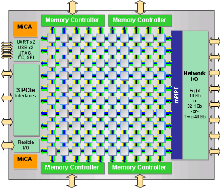

https://github.com/arild/actors_presentation
Arild Nilsen
Sjur Millidahl
October, 2012

Higher level of abstraction for concurrency
import scala.actors.Actor
class MyActor extends Actor {
def act(){
receive {
case s: String => sender ! response
}
}
}
val actor = new MyActor
actor.start
actor ! "hello"
"ComputeActor" should {
"compute length of string" in {
val result = ...
result must beEqualTo(5)
}
}
A Future is a read-handle to a single value (read-many) that may be available within a specific time-frame
A Promise is a write-handle to a single value (write-once) that should be made available within a specific time-frame
http://skillsmatter.com/podcast/scala/the-future-i-was-promised
def foreach[U](f: T => U): Unit
def map[S](f: T => S): Future[S]
def flatMap[S](f: T => Future[S]): Future[S]
def filter(p: T => Boolean): Future[T]
println("Test print before future")
val s = "hello"
val f = future {
Thread.sleep(10)
s + " future!"
}
println("Test print after future")
f onSuccess { case s => println(s) } //Completely asynchronous
Await.ready(f, Duration.Inf) //Blocks until the future is ready
Output:
Test print before future
Test print after future
hello world!
val f = future {
Thread.sleep(10)
println("Computing sum...")
new SumSequence(0, 2).perform
}
val p = promise[Int]()
p completeWith f
val result = Await.result(p.future, Duration.Inf)
println("Sum = " + result)
Output:
Computing sum...
Sum = 3val p = promise[Int]()
val riskyRes = future { riskyOperation.perform }
val safeRes = future { safeOperation.perform }
p completeWith {
riskyRes recoverWith {
case e: IllegalArgumentException => safeRes
}
}